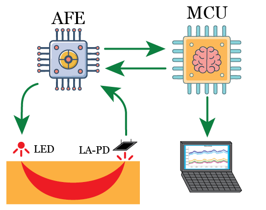
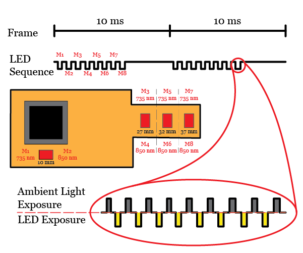
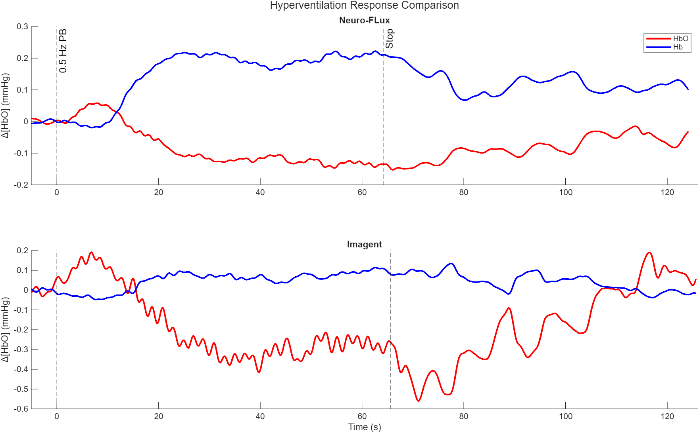
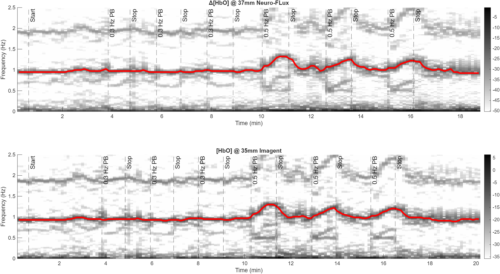

{kind=link}

Simplified System Schematic
MCU → analog front end (AFE) → LEDs and large-area photodiode (LA-PD), transmitting data wirelessly for analysis.
A fully flexible, wearable brain-monitoring device that tracks cerebral blood flow in real time
• Master's Thesis Research • Carnegie Mellon University • Advisor: Dr. Jana Kainerstorfer
Neuro-FLux is a wearable near-infrared spectroscopy (NIRS) device that measures blood oxygenation and flow in the brain continuously. Existing tools (EEG, fMRI) can't do this in everyday life, and earlier wearables lost signal the moment the wearer moved. Neuro-FLux solves that by putting the optics on an ultra-thin flexible printed circuit board (PCB) that bends to the shape of the head, keeping firm skin contact and clean optical coupling even during motion.
Continuous cerebral monitoring helps catch neurological problems early and opens the door to personalized brain health. Neuro-FLux showed that research-grade optical measurement is possible in a comfortable, flexible patch — not just a bulky lab rig.
Lead hardware and firmware engineer across the 2-year thesis. I designed the flexible PCB, wrote the embedded firmware for the STM32 microcontroller (MCU), built the signal-processing pipeline in MATLAB, ran all validation against commercial systems, and authored the thesis.

MCU → analog front end (AFE) → LEDs and large-area photodiode (LA-PD), transmitting data wirelessly for analysis.

Eight channels sampled each 10 ms frame; ambient light samples for digital correction.

Developed device's hemodynamic responses vs. a commercial FD-NIRS system during hyperventilation — confirming the signal up to industry standard.

Time-frequency view showing brain blood-flow frequency rising during hyperventilation and returning to baseline at rest.
{kind=link}
{kind=link}
{kind=link}